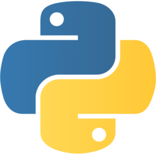
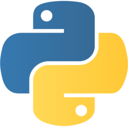
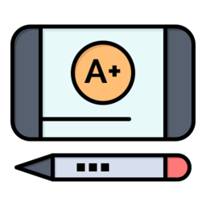
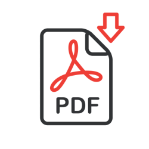

Bienvenido/a a mi portafolio

Soy Juan Sebastian Arias, desarrollador web
Sobre mi
Soy de colombia y vivo actualmente en la capital del país
(Bogotá), estudiante de ingeniería de sistemas y programador
autodidacta. Mi principal campo para desenvolverme en el
desarrollo web es el back-end, ya que es la parte de desarrollo
que más me gusta. Soy una persona perseverante y amante del
conocimiento, ya que considero que la obtención y aplicación de
este, nos puede llegar a convertir en la persona que deseamos ser.
Habilidades Tecnológicas
Tecnologías Front-end


Dominio
- HTML: Medio-avanzado
- CSS : Medio
- JavaScript : Basico
- Bootstrap : Medio
Dominio
- PHP: Medio
- Python: Medio
- SQL : Medio
- Git y Github : Medio-avanzado
Tecnologías Back-end
 



Habilidades personales más destacables
Trabajo en equipo
Creo firmemente que el trabajo en equipo es un pilar del éxito y siempre estoy dispuesto a ser parte de ello
Responsabilidad
Es algo que respeto y priorizo siempre, ya que comprendo que el cumplimiento de mis deberes es la principal forma de ofrecer mis habilidades
Comunicación asertiva
Comunicarme con aquellas personas que necesito para cooperar y conseguir los objetivos es algo muy importante, por eso siempre estoy abierto al diálogo
Orientación al servicio

Siempre dispongo de una alta orientación al servicio, tanto para ejercer como aprender, por lo tanto me considero una persona en la que se puede confiar para ayudar en lo que se necesite
Mis proyectos
SGD admin judicial
Un sistema de gestión documental con roles para administración de documentos
RepositorioY pronto presentaré más ...

Contacto
¿Deseas contactarme para alguna propuesta o colaboración?
Puedes contactarme a mi correo y/o ver mis cuentas de comuniación y trabajo
Correo: infojuansedev2@gmail.com